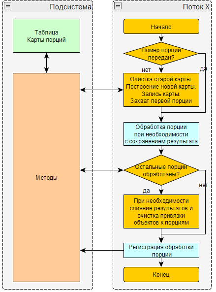
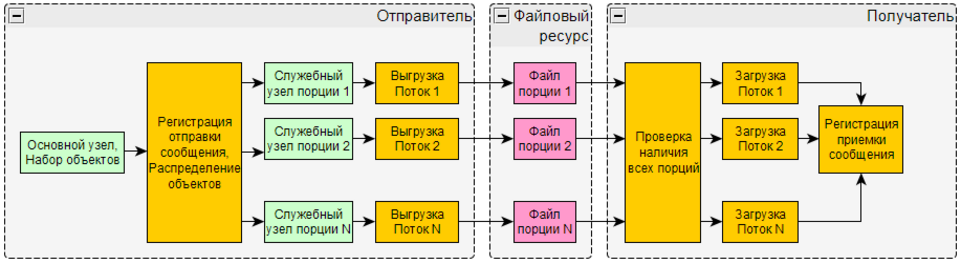
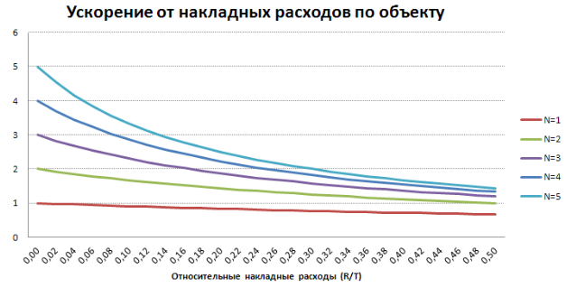
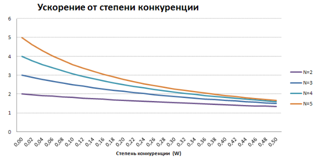
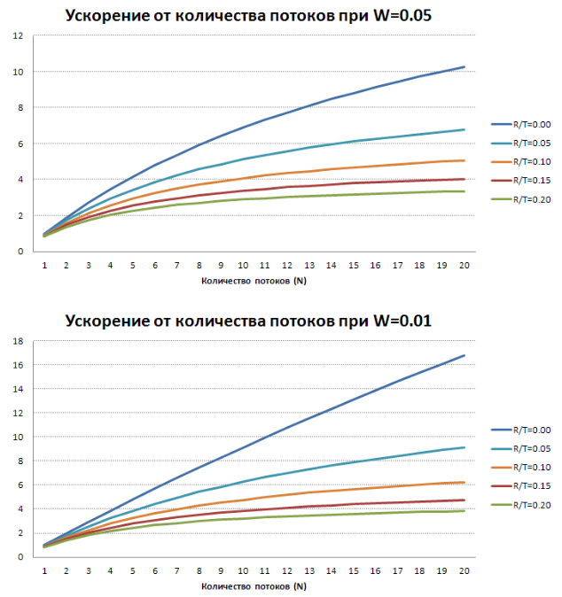

Рассказ об эффективных приемах организации обработок больших объемов данных на платформе 1С. Эти приемы можно назвать шагом к технологии big data.
Приемы обработки больших данных в 1С. На пути к big data...
В этой статье я расскажу об эффективных приемах организации обработок больших объемов данных на платформе 1С, накопленных за годы развития и использования продукта 2iS:Интеграция, разработанного в нашей компании 2iS (ООО “ИИС” Интегрируемые Информационные Системы). Эти приемы можно назвать шагом к технологии big data.
Автор статьи: Старых Сергей (автор подсистемы Инструменты разработчика)
Редакция: Харитонов Михаил (автор конфигурации Конвертация данных)
Термины
- Набор объектов - множество объектов для обработки
- Диспетчер - регламентное задание обслуживающее процессы обработок
Примеры обработок больших данных
- Нормализация нормативно-справочной информации (объединение дублей)
- Объем данных зависит от количества ссылающихся на дубли объектов
- Может требовать выполнение одновременно в большом числе баз
- Вычисление производных от больших данных
- Перезаполнение регистров при изменении первичных данных
- Проведение большого количества документов
- Заполнение новых реквизитов в больших таблицах
- Частичная очистка данных
- Выявление бесполезных объектов
- Удаление объектов с контролем ссылок
- Свертка регистров
- Выгрузка, загрузка и конвертация больших данных
- Слияние (консолидация) баз, на начальном этапе требующая перекачать значительную часть данных всех баз в другую
- Обмен большими данными вследствие других обработок больших данных
- Восстановление испорченных данных из копии базы
- Исправление испорченных данных
Однопоточная производительность
Для начала, рассмотрим наиболее эффективные приемы повышения однопоточной производительности для таких обработок.
Продолжение обработки с места прерывания
Чем дольше длится обработка, тем выше вероятность появления первой ошибки. В случае если обработка меняет условие попадания объектов в набор только в конце обработки набора объектов (например выгрузка или загрузка сообщения обмена данными), то в следующем сеансе ей приходится весь набор объектов обрабатывать заново и следовательно выполнять большое количество бесполезных повторных вычислений. Чтобы избавиться от этих вычислений, нужно периодически запоминать текущую позицию в наборе и, в случае аварийного завершения обработки, продолжать с места последнего прерывания. Но обязательно нужно проверять, тот же самый ли набор объектов мы обрабатываем. Если набор объектов в этот раз уже другой, то нам нельзя использовать позицию предыдущего набора. Сопоставить 2 набора объектов можно вычислив их хеши (значения хеш-функции).
Отсюда следует ограничение применимости приема только для воспроизводимых наборов объектов.
Примеры воспроизводимых наборов объектов:
- результат запроса с упорядочиванием по уникальному ключу
- таблица значений
- файл
Примеры не воспроизводимых наборов объектов:
- результат запроса без упорядочивания по уникальному ключу
- выборка изменений по узлу плана обмена
Чтобы вычислить хеш любого файла в 8.3 можно использовать объект ХешированиеДанных, а в 8.2 можно использовать COM-класс CAPICOM.HashedData . Чтобы получить файл из других типов наборов объектов, нужно:
- Получить таблицу ключевых свойств объектов
- Отсортировать таблицу по всем колонкам
- Сериализовать таблицу в файл через XML
После вычисления хеша перед началом обработки сверяем его с тем, для которого хранится текущая позиция с прошлого сеанса обработки. Если они совпадают, то при возможности произвольного позиционирования сразу встаем на эту позицию, а при последовательном обходе объектов пропускаем все объекты набора до этой позиции.
Этот прием, например, очень эффективен при загрузке данных из большого файла.
Отключаем регламентные задания в СУБД
Выполнение регламентных заданий в СУБД может серьезно снижать производительность обработки из-за ожиданий на блокировках и очередях аппаратных ресурсов. Поэтому их лучше временно отключать, но желательно обеспечить их автоматическое включение после завершения обработки, в т.ч. аварийного.
Оптимизация записи объекта
Минимизация ожидания на блокировках данных
- У регистров включаем разделение итогов и после больших многопоточных обработок пересчитываем итоги в периоды минимальной нагрузки
- По возможности переводим конфигурацию на управляемые блокировки
- Используем на платформе 8.3 версионный режим MS SQL (read_committed_snapshot)
- Конфигурация должна быть в режиме управляемых блокировок
- У баз созданных на 8.3 этот режим включен по умолчанию
- У баз созданных на 8.2 и ниже, его нужно включать вручную
- Для анализа ожиданий на блокировках данных используем
Запись в режиме загрузки
Если допустимо, то используем запись в режиме загрузки (Объект.ОбменДанными.Загрузка = Истина). В этом режиме:
- Методически должен выполняться очень незначительный процент кода обработчиков и подписок событий записи и потому меньше вычислений
- Платформа отключает ряд своих внутренних обработчиков и потому меньше вычислений. Например:
- Проверка уникальности кодов и номеров объектов
Отключаем итоги регистров
При возможности временно отключаем итоги регистров. Например, РегистрыНакопления.ОстаткиТоваров.УстановитьИспользованиеИтогов(Ложь)
- Оправдано для больших обработок изменения регистров
- На этот период перестанут работать виртуальные таблицы таких регистров и поэтому в частности перестанут работать многие отчеты
- Необходимо обеспечить после успешного и аварийного завершения включение итогов обратно (РегистрыНакопления.ОстаткиТоваров.УстановитьИспользованиеИтогов(Истина))
- После включения итогов обратно они пересчитываются платформой, но могут стать некорректными из-за ошибок платформы, поэтому желательно сразу после включения делать полный пересчет (РегистрыНакопления.ОстаткиТоваров.ПересчитатьИтоги())
Отключаем авторегистрацию изменений
При возможности отключаем авторегистрацию изменений (Объект.ОбменДанными.Получатели.АвтоЗаполнение = Ложь)
- В этом режиме измененный объект не будет регистрироваться платформой на всех узлах планов обмена с включенной авторегистрацией
- В распределенных базах допустимо, если обработка выполняется одновременно во всех базах и есть уверенность, что изменения объектов общих данных будут одинаковыми во всех базах
Отключаем RLS
При возможности выполняем запись без RLS. Запросы RLS могут служить причиной серьезных потерь производительности. Варианты их отключения:
- Выполняем под пользователем с набором ролей, дающим пустые RLS на нужных таблицах
- Используем привилегированный режим. Варианты:
- Устанавливаем привилегированный режим (УстановитьПривилегированныйРежим(Истина))
- Выполняем код обработки из привилегированного общего модуля
- В свойствах документа устанавливаем флажки "Привилегированный режим при проведении" и "Привилегированный режим при отмене проведения"
Устанавливаем монопольный режим
При возможности устанавливаем монопольный режим. Чем меньше сеансов в базе, тем меньше вероятность взаимоблокировки и ожидания на блокировках данных.
- Устанавливаем блокировку начала сеансов
- Устанавливаем блокировку регламентных заданий
- Разрываем все сеансы и соединения
- Устанавливаем монопольный режим (УстановитьМонопольныйРежим(Истина))
- Снимаем блокировку начала сеансов
- Снимаем блокировку регламентных заданий
- Выполняем обработку
- После завершения сеанса обработки монопольный режим автоматически отключится
Очищаем программный код
В любой конфигурации может быть прикладной программный код, который обязательно выполняется при внесении изменений в БД:
- RLS
- инициализация модулей объектов
- подписки и обработчики ПриЗаписи, ПередЗаписью, ПередУдалением
Он может выполнять много ненужных для обработки действий (даже в режиме ОбменДанным.Загрузка) и значительно увеличивать ее длительность. Понять это можно замером производительности отладчика. Если на время обработки базу можно заблокировать для пользователей, то можно временно очистить весь программный код и таким образом избежать выполнения лишних действий во время обработки. Алгоритм очистки:
- Сохраняем конфигурацию в файл
- Выгружаем модули конфигурации
- Очищаем полностью модули конфигурации, объектов и менеджеров
- Очищаем тела всех методов общих модулей
- Чтобы обращения к ним из подписок не вызывали ошибки
- Очищаем все запросы в ограничениях доступа
- Загружаем модули конфигурации
- Обновляем конфигурацию БД
- Выполняем обработку
- Загружаем конфигурацию из файла
- Обновляем конфигурацию БД
Многопоточность
Относительная скорость наращивания однопоточной производительности аппаратных ресурсов постоянно падает по технологическим причинам. Поэтому аппаратные ресурсы все больше растут в сторону многопоточной производительности, например растет количество ядер в процессорах. Вслед за ними адаптируются и программы. Многопоточность добавляет внутренней сложности программе, но делает ее более масштабируемой по скорости работы.
Порции объектов
Чтобы набор объектов можно было многопоточно обрабатывать, его нужно как то распределить между потоками. Поэтому разбиваем набор на столько частей (порций), сколько потоков задано на старте.
Обработка должна быть не чувствительна к порядку обработки порций (обработка любой порции не зависит от успеха обработки других)
- Примеры нечувствительных к порядку порций обработок:
- Выгрузка данных
- Загрузка данных
- Объединение дублей (замена дублей)
- Свертка регистра
- Восстановление последовательности (документов) по разным комбинациям значений измерений
- Универсальная обработка объектов
- Проведение документов, не использующих результаты проведения других документов
- Заполнение реквизитов
- Пометка удаления
- Удаление
- Примеры чувствительных к порядку порций обработок:
- Восстановление последовательности (документов) по одной комбинации значений измерений
- Проведение документов, использующих результаты проведения других документов
Подсистема
В силу во многом одинаковой сложности, привносимой многопоточностью в логику каждой обработки, разумно вынести ее в подсистему
- Карта порций – это таблица, описывающая комплект порций, на которые разбит весь набор данных для обработки
- Колонки:
- Номер – условный номер порции
- Ключ – произвольное примитивное значение, идентифицирующее набор данных порции
- Захватчик – идентификация потока, захватившего порцию
- Номер повтора – номер попытки обработки порции
- Привязка M объектов к N порциям. Распределение по порциям нужно делать как можно более равномерным, т.к. остальное время выполнения многопоточной обработки определяется длительностью ее самого долгого потока. Но при этом следует учитывать возможные ожидания блокировки данных. Способы привязки:
- Регистрация на служебных узлах плана обмена – для объектов БД эффективный и достаточно универсальный способ для любой конфигурации.
- Ключ порции – сам узел плана обмена.
- Накладные расходы = M * длительность регистрации объекта на узле (обычно в диапазоне [0.004;0.01]сек)
- Файлы порций – привязка выполняется создателем файлов путем распределения объектов ним.
- Общий файл – считаем объекты с начала файла, счетчик сбрасываем каждые N объектов.
- Ключ порции – значение счетчика.
- Накладные расходы = (N-1) * длительность чтения объектной структуры файла
- Функции:
- Построение карты порций - для набора объектов БД:
- по результату запроса
- по изменениям на узле плана обмена
- по произвольному алгоритму
- Запись карты порций
- Захват порции – помечаем порцию в карте захваченной, чтобы больше никто ее не начал обрабатывать
- Регистрация обработки порции - помечаем порцию в карте обработанной
- Диспетчер обеспечивает:
- Запуск дополнительных потоков обработок с захватом свободных порций и контролем числа повторов обработки каждой порции
- Освобождение порций неуспешно завершившихся потоков
Адаптация кода обработки
Большинство обработок для корректной работы в многопоточном режиме потребуют доработки. Схема алгоритма обработки:


- Если номер порции не передан диспетчером, то начальные действия (однопоточно)
- Очищаем старую карту порций
- Строим новую карту порций
- Записываем новую карту порций
- Захватываем порцию
- Обрабатываем порцию (многопоточно)
- Получаем и обрабатываем объекты порции по ее ключу
- После успешной обработки освобождаем порцию
- Финальные действия при регистрации обработки последней порции (однопоточно)
- При необходимости выполняем слияние результатов порций
- Очищаем привязки объектов к порциям
После регистрации обработки порции потоки не ждут друг друга, а завершаются, сохранив при необходимости результат обработанной порции в БД или файл.
Многопоточный обмен данными
При переводе в многопоточный режим наиболее усложняется логика процессов передачи данных (обмена данными). На схеме ниже я попытался отразить ее основные моменты.

Ускорение
Насколько же многопоточный режим ускорит выполнение обработки?
Закон Амдала отвечает на этот вопрос достаточно скудно, т.к. не учитывает накладные расходы многопоточности. Для предложенного выше механизма нужна боле детальная формула.
В первом приближении выигрыш будет зависеть от
- совокупной многопоточной производительности системы [Вычислительный узел клиента 1С (при наличии) - Вычислительный узел сервера 1С - Вычислительный узел сервера СУБД] в текущей ситуации. Для ее оценки можно использовать Многопоточное тестирование производительности сервера 1с - СУБД
- накладных расходов на многопоточность (построение карты порций, слияние результатов и прочее)
- ожиданий между потоками на блокировках данных, поэтому очень желательно использовать режим управляемых блокировок и разделения итогов регистров
- Количества потоков, чем их больше, тем лучше до некоторого порога
Детально многопоточное ускорение обработки набора объектов можно выразить формулой
![]()
где
- A - ускорение, отношение длительности выполнения однопоточной обработки к длительности выполнения многопоточной обработки
- P - длительность нераспараллеливаемой части вычислений для набора объектов в целом, общей для обоих вариантов обработки
- например, выполнение сложного запроса для получения ключей объектов набора
- T - длительность вычислений на один объект в однопоточном режиме
- M - количество объектов
- G - длительность вычислений для набора объектов в целом, необходимых только для многопоточного варианта обработки
- например, слияние результатов
- N - количество потоков
- E - длительность вычислений для порции объектов, необходимых только для многопоточного варианта обработки
- например, сохранение результата порции
- W - степень конкуренции (ожиданий, обусловленных многопоточным режимом), находится в диапазоне [0;1] и во многом зависит от N, основные типы ожиданий:
- на блокировках данных между потоками
- на очередях аппаратных ресурсов
- R - длительность дополнительных вычислений по объекту в многопоточном режиме (накладные расходы на многопоточность)
- например, привязка и отвязка объекта от порции
Влияние накладных расходов по объекту на ускорение
При достаточно большом количестве объектов и отсутствии конкуренции между потоками формула ускорения превращается в
![]()
Таким образом оценив R и T, мы можем достаточно неплохо оценить ускорение для многих обработок. Чем меньше будут относительные накладные расходы (R по отношению к T), тем больше будет эффект от увеличения количества потоков.


Какие выводы можно сделать из графика:
- Однопоточный режим будет практически всегда быстрее многопоточного с количеством потоков (N) =1, что обусловлено выполнением дополнительных вычислений. Поэтому при N=1 его нужно отключать.
- Чем больше потоков, тем сильнее падает ускорение с увеличением накладных расходов
- Хорошо масштабируемым ускорение можно считать при накладных расходах до 10%
- После 30% многопоточность использовать уже не рационально
- При 50% 2-х поточный режим работает с той же скоростью что и однопоточный
Пример.
Допустим обработка выгрузки и загрузки данных тратит на объект 0.045 сек, а на распределение объекта 0.005 сек. Тогда R/T=0.1, т.е. при 2-х потоках ускорение составит примерно 1.7, а при 3-х потоках - 2.3.
Влияние конкуренции на ускорение
Степень конкуренции является наиболее трудно оцениваемым параметром, т.к. зависит от многих факторов, многие из которых косвенно зависят от количества потоков (N) и могут меняться в процессе обработки. Эти факторы делятся на 2 основных типа: ожидания на очередях аппаратных ресурсов и ожидания на блокировках данных.
Ожидания на блокировках данных возникают уже при 2-х потоках, если потоки вызывают блокировки пересекающихся диапазонов данных. Поэтому для ожиданий на блокировках данных зависимость W(N) относительно слабая, а больше зависимость от конкретных объектов данных.
Влияние аппаратных ресурсов на многопоточное ускорение достаточно слабое пока рост количества потоков не приведет к полной загрузке хотя бы одного из них. Тогда начнутся массовые ожидания потоками на очереди доступа к этому ресурсу (например процессору или диску). Какой это будет ресурс и на каком вычислительном узле, сильно зависит от специфики обработки. Таким образом для аппаратных ресурсов функция W(N) чаще всего растет резко, но при большом N.
При достаточно большом количестве объектов и отсутствии накладных расходов формула ускорения принимает вид
![]()
Т.е. превращается в чистый закон Амдала, где W по сути описывает долю нераспараллеливаемых вычислений в каждом потоке.


График похож на предыдущую зависимость, но здесь он более пологий.
Влияние количества потоков на ускорение
Теперь посмотрим как будет зависеть ускорение от количества потоков при достаточно большом количестве объектов и реалистичных W и R/T.
![]()



На этих графиках хорошо видно, что многопоточное ускорение при наличии даже небольших относительных накладных расходов на объект быстро замедляет рост с увеличением числа потоков. Поэтому не стоит без большой необходимости сразу включать много потоков обработке, даже если позволяют аппаратные ресурсы, т.к. эффективность использования этих ресурсов может быть низкой. В большинстве случаев лучше начать с 2-4 потоков, выполнить обработку с тестовым большим набором данных, увеличить количество потоков на 1, повторить тест. Если разница будет заметной (более 20%), то можно добавить еще один поток и повторить эксперимент. Если разница будет незаметной (менее 20%), то лучше остановиться на предыдущем значении.
Оценка степени конкуренции
Одним из способов оценки W является вычисление ее значения через известные значения остальных переменных формулы
![]()
Пример.
Если мы получили ускорение 2.7 для 10 потоков и относительных накладных расходах 0.1, то по этой формуле мы получим достаточно высокую степень конкуренции 0.2. Если при этом показатели очередей аппаратных ресурсов не зафиксировали значительных ожиданий, то скорее всего она обусловлена ожиданиями на блокировках данных.
Параметры многопоточности для каждой обработки
- Минимальное количество объектов на порцию
- Позволяет снизить вероятность запусков, в которых многопоточный режим будет проигрывать однопоточному из-за дополнительных вычислений
- При количестве порций 1 многопоточный режим отключается
- Количество потоков
- Используется при построении карты порций, чтобы ограничить максимальное количество порций в ней
- Используется диспетчером при решении «запускать ли новый поток для обработки?», поэтому оператор может менять его в любой момент
- Фактическое количество потоков всегда меньше или равно количеству порций
Надежность
- Транзакции и блокировки данных для изменяющих БД обработок
- Каждый объект обрабатываем в отдельной транзакции
- Исключительно блокируем объект перед чтением, чтобы избежать его считывания для записи в другом сеансе
- Особенно актуально для многопоточных обработок с возможностью пересечения потоков по изменяемым данным. Примеры
- Выполняем в нерабочее (для пользователей) время
- Таким образом снижаем вероятность возникновения ошибок взаимоблокировок и превышения ожидания блокировок
- Повтор обработки объекта при ошибке
- Эффективен только при определенных типах ошибок
- Взаимоблокировки – высокая вероятность исправления
- Превышения ожидания блокировки – низкая вероятность исправления
- Ограничиваем количество попыток и их общую длительность
- Повтор обработки в целом при ошибке
- Обходим все остальные плавающие ошибки
- При возможности используем запись объектов в режиме ОбменДанными.Загрузка
- Обычно выполняется очень незначительный процент кода обработчиков событий записи и поэтому меньше вероятность ошибок прикладного кода
- Платформа отключает ряд своих механизмов, но это не только приводит к обходу одних проблем, но и иногда к появлению других. Например для регистра бухгалтерии есть особенности, которые обязательно нужно учитывать в этом режиме.
- При возможности выполняем полную очистку программного кода
- Выше мы уже рассмотрели этот прием в плане повышения производительности. Для многих больших многолетних систем проконтролировать все критерии качества написания прикладного программного кода очень трудоемко. В них например могут быть различные прикладные проверки перед записью объектов случайно или даже намеренно не заключенные в условие “Если Не ЭтотОбъект.ОбменДанными.Загрузка” и тому подобные. Устранение всех возможных ошибок прикладного кода может занять время, не соразмерное с выделяемым на поставленную задачу. Временная очистка программного кода позволяет нейтрализовать сразу все такие ошибки.
Гибкость
Пропуск ошибочных объектов для повторной обработки
Многие обработки не чувствительны к порядку обработки объектов. Поэтому в случае возникновения ошибки обработки любого объекта его можно отложить на следующий сеанс.
Такие обработки по способу передачи информации о пропущенных объектах между сеансами можно разделить на 2 типа:
- Естественная передача. Не требует дополнительных действий. Примеры:
- Запрос с отбором по условию, изменяемому при обработке объекта
- Выборка изменений по узлу со снятием регистрации после успешной обработки объекта
- Явная передача. Здесь требуется строгая и желательно компактная идентификация объектов. Примеры:
- Выборка изменений по узлу с перерегистрацией пропускаемых объектов и снятием регистрации по номеру выбранного сообщения после обхода всех объектов
- Обмен данными, пропущенные при загрузке объекты передаем на сторону выгрузки в виде ключей и там заново регистрируем для отправки
Управляем нагрузкой на оборудование
Думаю многие сталкивались с пиками нагрузки, вызванными неожиданным запуском сразу большого числа регламентных заданий, которые иногда даже приводят к зависанию менеджера кластера. Также те, кто работает с многопоточностью скорее всего знакомы с пиками нагрузки, вызванными сбоями в работе многопоточной логики. Чтобы ограничить такие пики можно ввести понятие несущего сеанса (в нашем продукте “процессор автозаданий”), т.е. такого сеанса, который служит ячейкой для размещения конкретной обработки. Оператор константой задает количество таких несущих сеансов для базы и таким образом ограничивает количество одновременно выполняющихся (потоков) обработок. Практика показывает, что количество несущих сеансов оптимально устанавливать в пределах [N;2N], где N - среднее между количеством логических ядер на серверах 1С и СУБД. Но такое ограничение может быть не всегда удобно и в каких то сценариях, например для строгого соблюдения расписания, потребуются обычные (выделенные) сеансы. Поэтому оптимальным решением будет применять комбинированный режим:
- Для каждой обработки указываем режим запуска несущий/выделенный сеанс
- Для требовательных к расписанию обработок устанавливаем режим “выделенный сеанс” (регламентное задание), жертвуя управляемостью нагрузки
- Для остальных используем несущий сеанс, жертвуя строгостью соблюдения регламента запуска
- Диспетчер создает N регламентных заданий (несущих), которые будут захватывать и запускать из очереди задания-обработки с режимом “выделенный сеанс” в соответствии с их расписанием и многопоточностью
- Диспетчер завершает обработки в запрещенное регламентом время
Чем меньше баз с таким механизмом на одном серверном компьютере, тем выше управляемость нагрузкой.
Мониторинг
В случае нештатной ситуации с выполнением обработки ответственного спросят о причине, по которой она произошла. Чтобы облегчить задачу поиска этой причины полезно регистрировать ряд событий и состояний для каждой обработки
- Каждый сеанс обработки регистрируем в журнале выполнения вместе с
- Начало/Конец/Длительность
- Успешность
- Сообщения пользователю, выведенные в процессе обработки. Получить их можно функцией ПолучитьСообщенияПользователю().
- Описание перехваченной ошибки. Чтобы перехватить ошибку, запускаем обработку внутри Попытка-Исключение.
- Описание ошибки, которую не удалось перехватить, или аварийное завершение. Это информацию должен собирать диспетчер через штатный журнал фоновых заданий.
- Ошибочные объекты регистрируем
- с подсчетом попыток обработки
- с датой и описанием первой и последней ошибок
- после успешной обработки перемещаем в отдельный журнал
- Длительные обработки на каждом этапе должны регулярно обновлять текущий прогресс в специальном регистре состояний
- Для статических наборов точно
- Для динамических наборов приблизительно, опираясь на размер набора на старте
- Показатели
- Количество объектов Обработано/Всего/Пропущено/Осталось
- Время Начало/Прошло/Всего приблизительно/Осталось приблизительно
- Средняя длительность обработки объекта
- Необходимо выполнять это не чаще заданного порога, чтобы выполнение этих вспомогательных операций заняло незначительную часть общего времени выполнения обработки
- Мы используем порог раз в 10 сек для локальных процессов
- При необходимости периодически собираем и регистрируем другие контрольные показатели. Примеры:
- Количество объектов на узле плана обмена
- Нагрузка на процессор на локальном компьютере
- Длина очереди диска на сервере СУБД
- Свободное место на системном диске локального компьютера
Автообрезание журналов
Мощная система мониторинга может вызывать активный рост таблиц журналов, поэтому ей необходим механизм их автообрезания
- В константе храним общую глубину по умолчанию в днях для всех обработок
- Для каждой обработки обеспечиваем возможность указания собственной глубины в днях и количестве строк
- Выполняем автообрезание в периоды наименьшей нагрузки. Обычно достаточно раз в сутки в ночное время.
Инструмент отображения мониторинга
Такой инструмент должен позволять видеть в одном месте все обработки со всей оперативной информацией и журналами.
Оповещения
По условию создания оповещения можно разбить на 2 типа: по событиям и по состояниям (интервалам времени).
По важности оповещения можно разбить на обычные (информационные) и тревожные. Тревожность означает значительную вероятность наличия проблемы, которая не исправится без вмешательства одного из оповещаемых.
Информационные оповещения
Примером события и одновременно состояния для таких оповещений может служить начало/конец сеанса обработки. Применяются такие оповещения для избранных редко выполняющихся обработок, иначе они будут создавать слишком большой поток малополезных сигналов в приемнике оповещений.
Оповещения по тревожным состояниям
Создавать оповещения по каждому тревожному событию (например ошибке) у часто выполняющихся обработок явно избыточно, т.к. тревожные события обычно повторяются и потому приемник оповещений быстро засорится и станет мало полезным. Поэтому эффективно объединять тревожные события в тревожные состояния - непрерывные интервалы времени, в течение которых выполняется какое то тревожное условие.
- Создаем оповещение когда?
- При регистрации тревожного состояния (тревожное условие изменило результат на Истина)
- В конце тревожного состояния (тревожное условие изменило результат на Ложь)
- В рабочее время каждые N часов агрегировано активные тревожные состояния
- Пустое оповещение все равно отправляем, чтобы оповещаемый точно знал, что проблем нет
- Виды тревожных состояний
- Серия неуспехов обработки в целом. Количество последних неуспешных целых сеансов достигло порога
- Фиксируем даты и описания первой и последней ошибок серии
- Серия ошибочных объектов. Имеется хотя бы один ошибочный объект, количество повторов обработки которого превысило порог
- Ответственный должен обеспечивать минимальное количество пропускаемых повторно объектов, чтобы удерживать низкий уровень бесполезных вычислений
- Фиксируем информацию свернуто по типам объектов
- Долгий сеанс. Длительность текущего сеанса превысила порог
- Возможные причины
- Зависания
- Бесконечные циклы
- Фиксируем текущий прогресс и дату последней активности
- Пауза обмена данными при приеме сообщений. Завершений загрузки сообщений обмена данными не происходило дольше порога
- Серии неуспехов может не быть, т.к. ошибка может быть на стороне отправителя.
- Серия тревожных результатов
- Свертка последних результатов показателя попала в тревожную зону
Отправка оповещений
- Отправляем кому?
- Тревожные оповещения отправляем администратору базы и ответственному за конкретную обработку
- Информационные и тревожные оповещения отправляем по списку получателей для конкретной обработки
- Отправляем каким сервисом?
- email - основное средство доставки оповещений
- бесплатный
- допускает относительно большую частоту и объем
- отправляем все оповещения в подробном виде
- sms - для особо важных оповещений
- платный
- допускает относительно малую частоту и объем
- отправляем только самые важные оповещения и в сокращенном виде
Метаданные однотипных обработок для разных баз
Если у Вас много баз, в которых нужно выполнять однотипные обработки (в частности регламентные задания) с общим вспомогательным кодом, то логично будет собрать все это в независимую подсистему. Примером такой подсистемы может служить БСП (Библиотека Стандартных Подсистем) от 1С. Далее, Вы неизбежно столкнетесь с проблемой актуализации этой подсистемы во всех базах. Чем больше конфигураций и баз, тем больше времени и затрат будет уходить на каждую актуализацию. И тем больше рисков, потерь и убытков для компании - владельца данной инфраструктуры.
Избавиться от этих проблем поможет вынесение подсистемы во внешнюю (управляющую) базу. Что это даст?
- Нет необходимости каждый раз обновлять подсистему внутри каждой базы
- Нет необходимости подключаться к каждой базе (и переключаться между ними) для управления и обзора общей картины
- Проще применять прием полной очистки программного кода
- Можно комбинировать настройки обработок с базами
- Обработки без ссылок на объекты во входных параметрах. Примеры:
- Проведение документов за период
- Удаление помеченных объектов
- Обработки со ссылками в параметрах на общие объекты для группы баз. Примеры:
- Объединение дублей в базах, получающих нормативно-справочную информацию из единого источника
- Можно организовывать наглядное последовательное (пакетное) выполнение обработок адресованных разным базам, например:
- Выгрузка данных из базы “Управление торговлей”
- Загрузка данных в базу “Бухгалтерия предприятия”
- Выгрузка данных из базы “Бухгалтерия предприятия”
- Загрузка данных в базу “Консолидация”
Наш продукт 2iS:Интеграция является примером такой управляющей базы с широкими сервисными возможностями, включающими множество предопределенных обработок и возможность удобной разработки собственных обработок.
Заключение
В том или ином виде, большинство из описанных приемов реализованы в нашем продукте2iS:Интеграция, в частности, в механизмах обмена данными, объединения дублей и универсальной обработки объектов. Все они используются в реальных рабочих процессах в крупных компаниях с большими объемами данных и позволяют фактически одному сотруднику обеспечивать эффективную работу всех обработок в большом количестве баз. Несмотря на наличие в конфигурации защищенного модуля, 99% программного кода конфигурации открыто, то есть Вы можете изучить реализацию описанных приемов